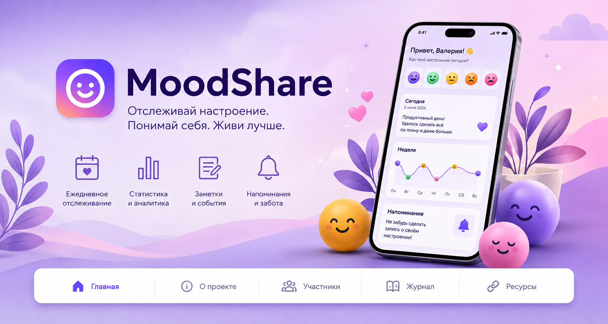

О проекте
MoodShare — мобильное приложение для ежедневного мониторинга эмоционального состояния пользователей. Проект разработан в рамках дисциплины «Проектная деятельность» Московского Политеха.
В современном обществе проблема эмоционального выгорания и хронического стресса становится всё более актуальной. Многие люди не отслеживают собственное эмоциональное состояние и не замечают изменения настроения, что может негативно влиять на качество жизни.

Цель проекта
Разработка мобильного приложения для ежедневного отслеживания эмоционального состояния пользователей, формирования привычки самонаблюдения и повышения уровня эмоциональной осознанности.
Задачи проекта
Основные функции приложения
Настроение
Ежедневная фиксация эмоционального состояния.
Заметки
Добавление текстовых комментариев к записям.
Календарь
Просмотр эмоционального состояния по датам.
Статистика
Графики и анализ динамики настроения.
Напоминания
Персонализированные уведомления для пользователя.
Приватность
Локальное хранение пользовательских данных.